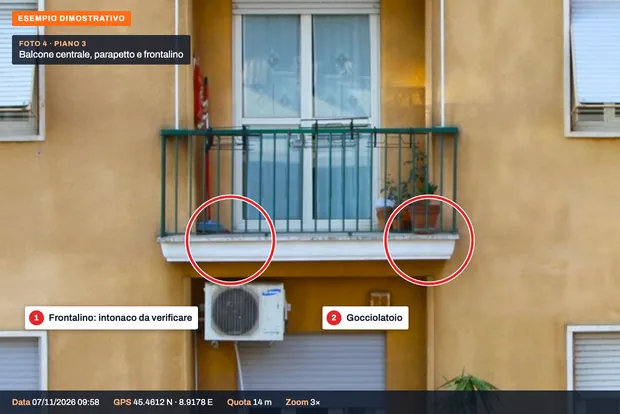
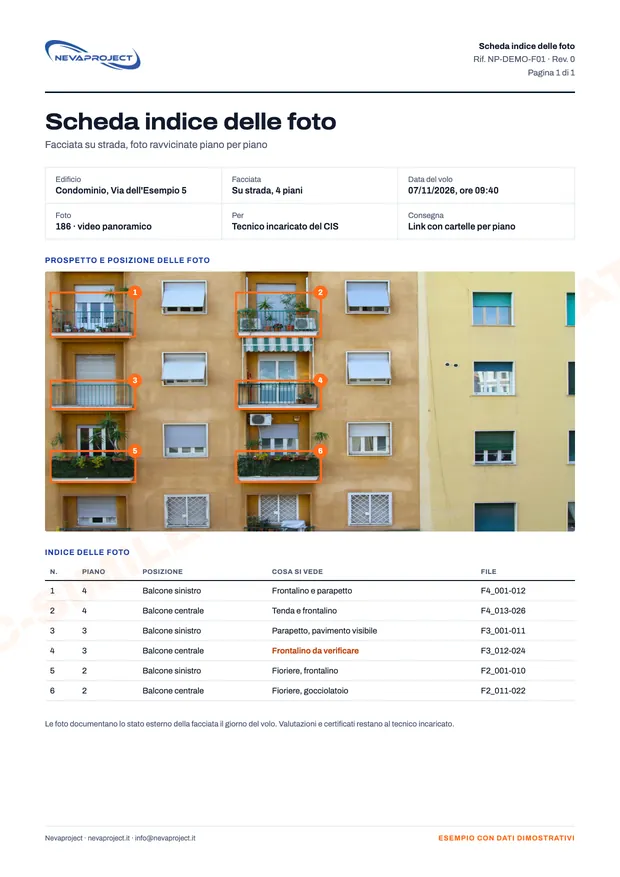

Per chi.
Per chi deve valutare lo stato di una facciata o preparare dei lavori e vuole vederla da vicino prima di montare un ponteggio.
- Ingegneri e architetti, per verifiche e certificati
- Amministratori di condominio, prima di un'assemblea o di un preventivo
- Imprese, per preparare il preventivo di rifacimento
- Proprietari di palazzine, cascine ed edifici storici
Come funziona.
Richiesta
Indirizzo, numero di piani e facciate, e cosa serve al tecnico. Valutiamo zone di volo, spazi e passaggi prima del preventivo.
Volo
Riprendiamo ogni facciata piano per piano. Il drone non vola sopra le persone: scegliamo orari e posizioni adatti all'indirizzo.
Consegna
Foto ordinate per facciata e per piano, con una scheda indice che dice dove è stata scattata ogni foto.
Cosa riceve.
- Foto ravvicinate piano per piano
- Foto ordinate per facciata
- Video panoramico
- Scheda indice
- Foto originali con data e GPS
Le foto documentano lo stato esterno della facciata in una data precisa. Le valutazioni e i certificati restano al tecnico incaricato.
Certificato di idoneità statica
Alcuni comuni chiedono per gli edifici più datati il certificato di idoneità statica (CIS). Lo firma il tecnico incaricato; le nostre foto delle facciate gli servono come documentazione dello stato esterno.
Ogni volo è verificato prima sulle zone D-Flight e secondo le regole ENAC; dove serve un'autorizzazione la chiediamo noi.
Esempi di consegna.
Ecco cosa riceve. Clicchi su un'immagine per ingrandirla.

Facciata per pianiOgni riquadro corrisponde a una serie di foto ravvicinate.

Dettagli dei balconiFrontalini, parapetti e gocciolatoi da pochi metri.

Scheda indiceDove è stata scattata ogni foto, piano per piano.


Esempi dimostrativi su foto d'archivio: indirizzi e dati sono a titolo illustrativo.
Prezzi.
Prezzi di partenza e finali, IVA non applicata (regime forfettario).
| Servizio | Prezzo |
|---|---|
| Palazzina | su preventivo |
| Condominio | su preventivo |
- Il prezzo esatto dipende da numero di piani, facciate e accessi, e lo scriviamo nel preventivo.
- Se per l'edificio serve un sopralluogo prima del volo, lo concordiamo a parte.
- Trasferta inclusa fino a 60 km dalla base; oltre, su preventivo.
- Se il giorno fissato piove o c'è troppo vento, spostiamo il volo senza costi.
Chi vola.
Dieci anni di voli
Oltre 3.000 impianti fotovoltaici ispezionati in tutta Italia, per aziende dell'energia e studi tecnici.
In regola con ENAC
Operatore registrato, pilota con attestato A2 e categoria Specific (STS). Ogni lavoro è verificato prima sulle zone di volo D-Flight e secondo le regole ENAC.
Voli assicurati
Polizza di responsabilità civile per i voli con drone.
Domande frequenti.
Le foto bastano per il certificato di idoneità statica?
Documentano lo stato esterno della facciata. Il certificato lo firma il tecnico, che decide quali verifiche servono: possiamo concordare con lui le inquadrature prima del volo.
Bisogna chiudere il marciapiede?
Dipende dall'indirizzo. Il drone non vola sopra le persone: prima del preventivo valutiamo spazi e passaggi e, se serve, concordiamo con l'amministratore orario e posizione.
E in centro città?
Si può fare dove le regole lo consentono. Verifichiamo prima l'indirizzo sulle zone D-Flight e secondo le regole ENAC; se serve un'autorizzazione la chiediamo noi e nel preventivo indichiamo i tempi.
Riprendete anche i cortili interni?
Sì, se il cortile ha lo spazio per volare in sicurezza. Lo valutiamo prima del preventivo, con le foto o una mappa dell'edificio.